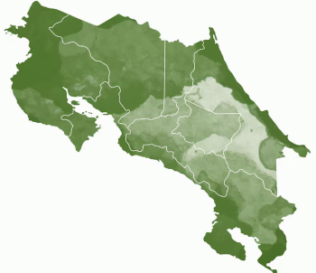

Conectando ideas, proyectos y oportunidades académicas.
Decidí crear PuraIdea como una propuesta de emprendimiento digital para apoyar a la población estudiantil costarricense, dando visibilidad a proyectos, investigaciones, tesis, congresos y trabajos programados que muchas veces no llegan a ser conocidos fuera del aula.

Elegí esta idea porque en las universidades se realizan muchos trabajos con valor, pero normalmente quedan guardados solo para una nota. Con PuraIdea quiero mostrar que esos proyectos pueden servir como referencia, inspiración o punto de partida para otros estudiantes.
También considero importante que exista un espacio donde se reúnan congresos, investigaciones y oportunidades académicas, para que más personas en Costa Rica puedan acceder al conocimiento y participar en iniciativas de crecimiento.
Esta página representa una idea de emprendimiento enfocada en apoyar la educación, la innovación y el talento joven costarricense mediante una plataforma sencilla, accesible y organizada.
Permite mostrar proyectos universitarios, tecnológicos y programados creados por estudiantes.
Da espacio a tesis, investigaciones y trabajos académicos importantes para que sean consultados.
Informa sobre congresos, charlas, ferias, talleres y eventos académicos de interés.
Busca relacionar estudiantes, universidades y empresas interesadas en innovación.
para proyectos estudiantiles.
y trabajos académicos.
y eventos educativos.
entre estudiantes, universidades y empresas.
para apoyar el desarrollo costarricense.